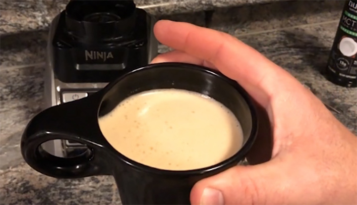

Bulletproof-Coffee
Starting your day with cereal, granola, oatmeal, toast, fruit, or another carb-heavy breakfast staple spikes your blood sugar. You will get a quick burst of energy, but by mid-morning your blood sugar will crash, and you will be hungry, tired, and unfocused.
Starting your day with Bulletproof Coffee, on the other hand, gives you three things:
- Suppressed hunger: Brain Octane Oil balances ghrelin and CCK, your hunger hormones, keeping you full until lunch. You can read more about the science behind BP Coffee and hunger suppression here
- Steady lasting energy: The saturated fat in grass-fed butter slows the absorption of caffeine, which gives you even energy for several hours instead of a caffeine spike and crash. No jitters, either.
- Mental clarity: Brain Octane rapidly converts to ketones, a type of molecule that your brain uses more efficiently than carbs or sugar. Pair ketones with the slowly releasing caffeine and you can literally feel your brain turning on.
Ingredients
- 1 cup hot coffee freshley brewed
- 1 tablespoon coconut oil
- 1 tablespoon unsalted butter
Directions
- Combine all ingredients in a blender. Blend until smooth and frothy.
- Serve immediately.